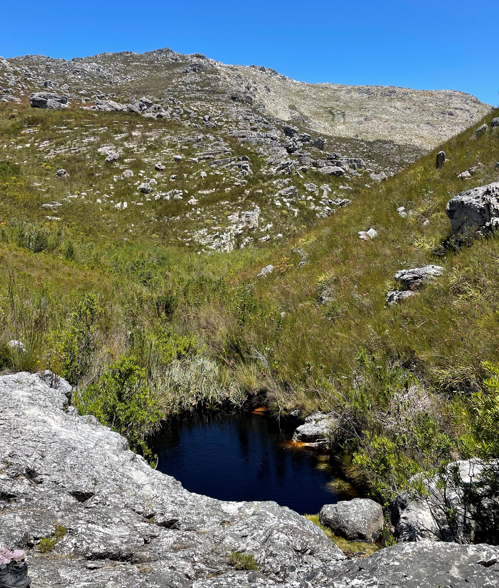
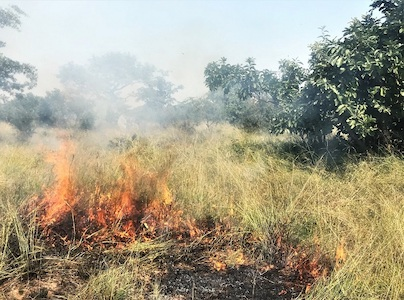
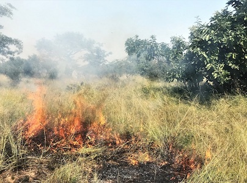
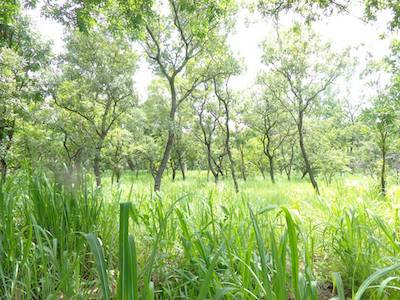
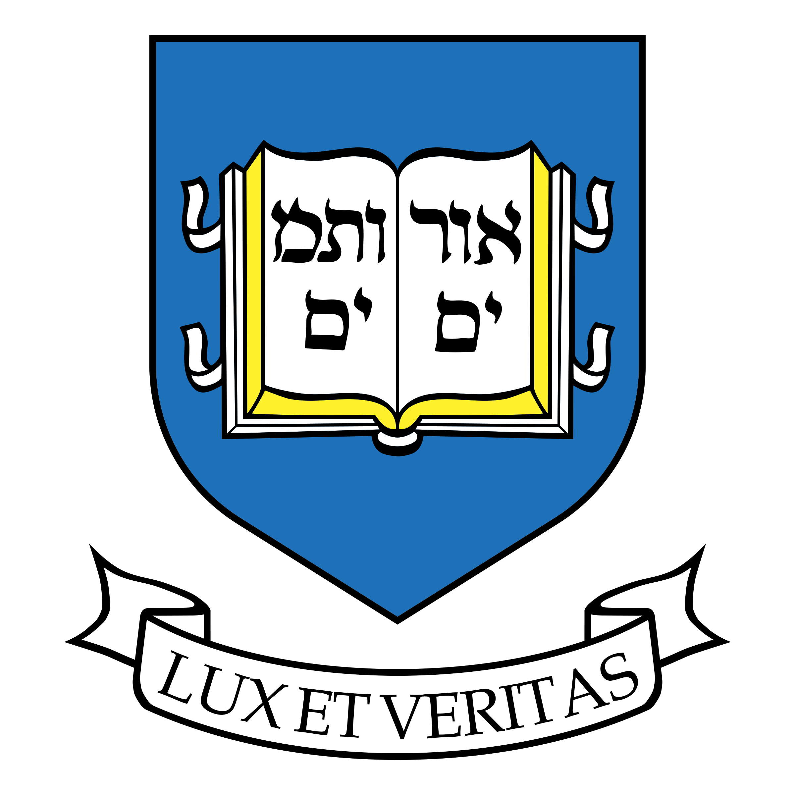

Anabelle W. Cardoso
Researching African ecosystem dynamics, with a particular interest in ecotones and fire. Currently the Science Team Manager for NASA's first biodiversity-focussed field campaign: BioSCape. Working at the University at Buffalo in the lab of Adam Wilson, as well as with Erin Hestir (University of California, Merced) and Jasper Slingsby (University of Cape Town). To learn more about BioSCape visit bioscape.io.
Publications
Field site locations
Cape Floristic Region, South Africa
The Greater Cape Floristic region contains two global biodiversity hotspots. The Fynbos vegetation here regularly burns, but normally has lower fire return times than savanna ecosystems.


Scroll to view more →
Lopé NP, Gabon
Lopé National Park is a mesic forest-savanna mosaic landscape that regularly burns; and it is home to the largest remaining population of forest elephants.


Kruger NP, South Africa
Kruger National Park is a more arid savanna system with an abundance of megafauna, it also experiences regular fire.

 



Kogyae SNR, Ghana
Kogyae Strict Nature Reserve lies within the transition from lowland rainforest to savanna, it burns fairly regularly.



Scroll to view more →
Academic journey
University at Buffalo
2022 - present:
Science Team Manager for BioSCape, Postdoctoral Associate (in the lab of Adam Wilson) - Geography Department.

Yale University
2019 - 2021:
Postdoctoral Associate (in the labs of Carla Staver and Sally Archibald) - Ecology and Evolutionary Biology Department
University of Oxford
2015-2018:
Ph.D. (supervised by Yadvinder Malhi, Imma Oliveras, Kate Abenerthy, and William Bond) - Geography and the Environment
2013-2014:
MSc. (supervised by Yadvinder Malhi and Imma Oliveras) - Environmental Change and Management